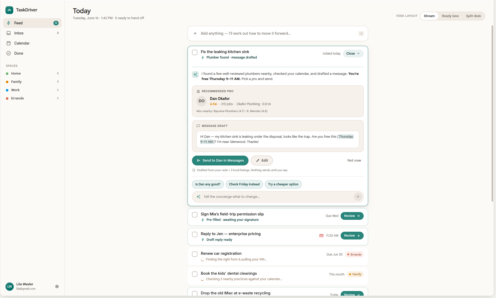

Everyday tasks take a surprising amount of activation energy to get going — and to actually finish — probably because most of them are things we'd rather not do. TaskDriver attempts to lower that activation energy: it does the digital legwork to get each task as close to done as possible, then hands you the human part that's left. It's a fulfillment engine for individuals — led by AI, of course, as if anything isn't these days.
See how it works
Other task managers are cognitive tax collectors. Beautiful lists that do nothing but remind you of everything you haven't done. The work of actually doing it stays entirely on you.
TaskDriver takes a different angle. The hardest part of any task often isn't the doing — it's the activation energy: the research, the forms, the phone calls, the figuring-out. We try to reduce that overhead as much as we can, so more of what's left is just the unavoidable last step. Less friction between you and done means more things actually get done.
The research behind this →Some tasks are pure muscle. Most aren't. For every one, the concierge — the AI behind the fulfillment engine — handles as much of the digital work as it can, then hands you the smallest remaining human step. It's a hard problem, and it's the one we're built around.
There's no digital part to this — it's yours, start to finish. So we don't pretend otherwise. You get a clean, well-timed reminder and nothing in the way.
Almost all of this lives on a screen. So we try to go most of the way: read it, pre-fill what we can from your vault, get it ready to send — ideally leaving you little more than a signature.
Where we can, we read each task, make sense of it, and route it into the approach most likely to get it closer to done.
School registrations, medical waivers, municipal tax forms. TaskDriver aims to read the document and pre-fill what it can from your secure vault — name, address, ID, phone — then build you a signing screen.
"I've pre-filled your municipal tax form. Draw your signature below to authorize me to send it, or tap to review the draft."
Drop the old computer at recycling, return the keys, get the crib to storage. TaskDriver tries to weigh distance, traffic and opening hours against your calendar — then suggests a good time to go and what to bring.
"The storage facility is open until 6:00 PM. With traffic, leaving at 3:15 PM is your best window. Bring your key card and a screwdriver to dismantle the frame."
A leak under the sink, a broken window, a noise in the car. TaskDriver looks for a few well-reviewed local providers, checks your availability, and drafts the message for you to send.
"Top-rated plumber nearby: Dan (★4.9). Message ready: 'Hey, my kitchen sink is leaking under the disposal. Free this Tuesday 9–11 AM?' Tap to open in WhatsApp."
Install a water filter, assemble a shelf. Some tasks can go two ways. TaskDriver lays out both paths side by side — the cost, the time, the link — so you just pick a lane.
"DIY: buy this filter ($35) and follow a 2-min guide. Or hire: local handyman ~$60, message ready to send. Your call."
No grids, no boards, no guilt. Just three calm views that move every task forward.
A clean vertical stream of what's active. Each task shows only its title and its next step — "Awaiting your signature," "Handyman draft ready." Nothing else competes for your attention.
Tap a task and it expands into a handoff tailored to it — the pre-filled form, the optimal departure time, the message ready to send. Everything you need to finish, in one place.
Every card has a chat line. Say "use the brand-name filter instead" or "check if Dan's free Friday" and the action buttons rewrite themselves in real time. The chat is the editor.
A real Action Card — tailored to the task, not a generic detail page.
The engine sits on solid fundamentals — so every task has a home and the right context, with the craft, control, and data ownership to make it yours.
Group tasks into spaces for your projects, areas, and the parts of life that deserve their own lane — and share any space with the people involved.
Move between focused feed, today, and inbox to see your work the way the moment calls for.
Attach the form, the photo, the receipt. The context the engine needs lives right with the task.
Repeating tasks and reliable reminders, so the things that come back around never slip.
Write freely in any space with Markdown — keep task metadata, notes, and structure organized exactly as you see fit.
Drive everything from the keyboard — capture, navigate, and act without ever reaching for the mouse, if you're that kind of person.
Choose between color themes on web and mobile, each with automatic light and dark modes that follow your system.
Birthday flyer from another parent? Share the image or text to TaskDriver and it pulls the event details into your calendar — on web and mobile.
We want you to love working with TaskDriver — but if you don't, export all your spaces and tasks anytime and take them elsewhere.
Your calendar, your inbox, your tools. TaskDriver pulls in the context it needs and acts through the channels you already use.
Two-way sync across every account. The engine reads your real availability before it schedules anything for you.
Star or label an email and TaskDriver turns it into a task with all its context — then drafts the reply or next step for you.
Every TaskDriver mention in a doc becomes a task — captured with the surrounding context, so the work starts itself the moment you write it down.
Mentions and review requests become tasks automatically — surfaced with the context you need to act, not just a notification.
Turn any message into a fulfillment task without leaving the conversation. The engine takes it from there.
Connect your favorite AI assistant to drive tasks, ask about them, or hand off new ones from anywhere.
Already living in Linear, Notion, Asana, or something else for your personal tasks (or personal work tasks)? We know — and we'll try to accommodate.
TaskDriver is a mobile-first, installable PWA — fast and ready on any device, right where the errands and handoffs happen. Native iOS and Android apps are on the way.
TaskDriver is in closed early access right now — we're onboarding a small group while we refine the engine. Request an invite and we'll be in touch.
Request early access